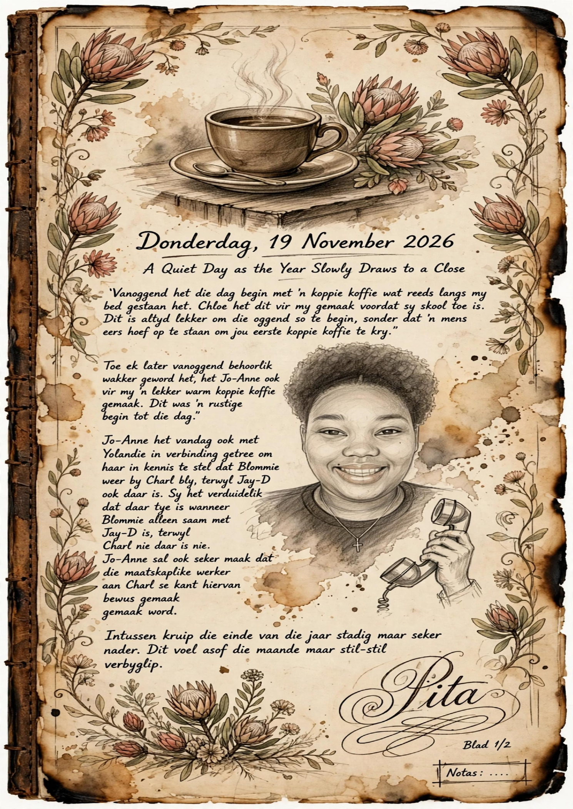
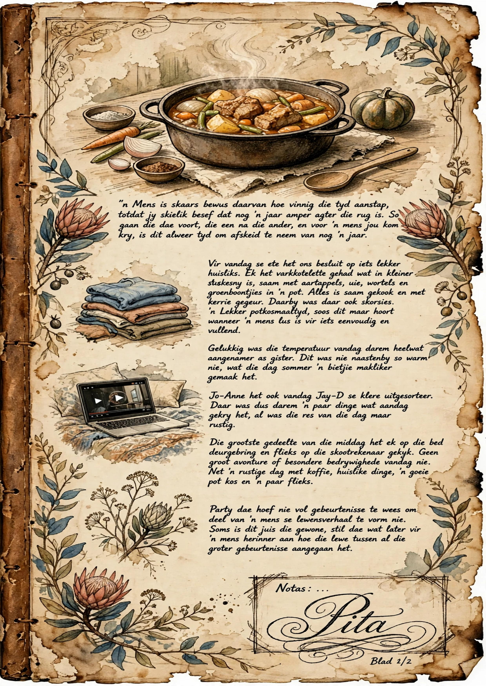

The Wanderer's Illustrated Diary
THURSDAY · 19 NOVEMBER 2026
A Quiet Day as the Year Slowly Draws to a Close
The original two-page illustrated diary entry, preserved as supplied. View both pages below or open the original PDF.
PAGE 1 OF 2

PAGE 2 OF 2

Original PDF
The supplied PDF is preserved unchanged.